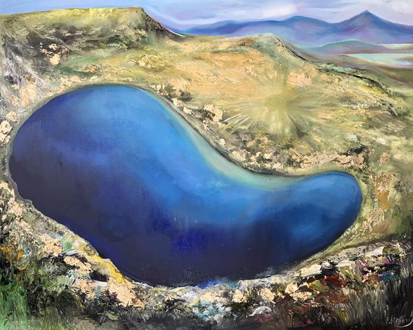

Lake Kidney is one of the Seven Rila Lakes . Its name comes from its shape, which resembles a kidney or bean. It is located at 2282 m above sea level, ie it is the third highest in the lake group. It flows into the fourth of the seven lakes - Gemini . The area of its catchment area is 0.54 km 2 . In terms of water volume (1,170,000 m 3 ) it is the largest of the seven lakes, second in Rila after Stinky Lake and third among all lakes in Rila and Pirin. [1] In terms of water surface area (8.5 ha) it is second in this lake group after Gemini. The kidney is the second deepest after the Eye . Its maximum depth is 28 m; around the shores there is a strip of shallower water, and in the middle is its maximum depth - a dark area shaped like the outline of a lake. [1] In the past, the lake bore the name Kara puddle [2] . At its southeastern end, the paths from the Seven Lakes hut and the Skakavitsa hut meet, and the connected path continues to the Razdela saddle and from there to the Ivan Vazov hut, the Rila Monastery or Malyovitsa.